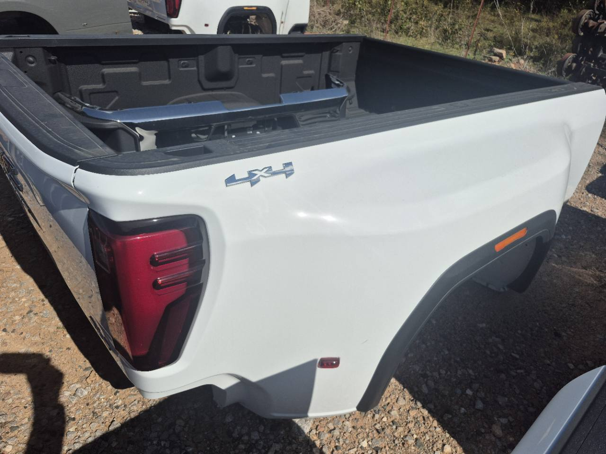

Bed only.
Confirm the listed contents and any hardware with us before purchase. Other parts are sold separately unless explicitly included.

Choose a thumbnail, or open the main photo full-size.
White. New condition. Bed only.
Confirm source availability, final price and expected arrival. We must collect this bed before you can pick it up in Dallas. An inquiry does not reserve it or place an order.
Send your truck details so we can confirm exact fitment. Call/text before traveling.
Confirm the listed contents and any hardware with us before purchase. Other parts are sold separately unless explicitly included.
This bed has not arrived at our Dallas shop. We must collect it first. Confirm expected arrival and wait until we tell you the bed is ready before traveling or booking freight.
Confirm model year, bed length, and single rear wheel or dually configuration. Installation and removal are arranged separately.
Confirm the fit. Get the price. Arrange your Dallas pickup.